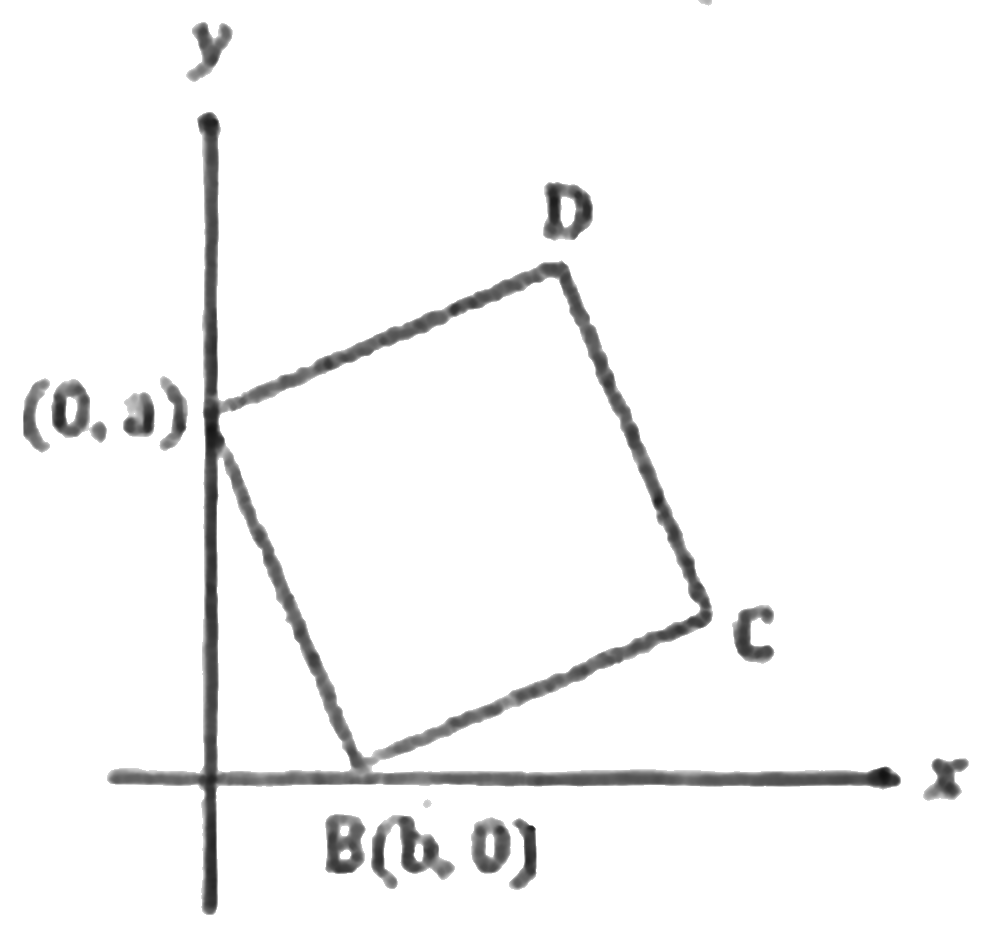
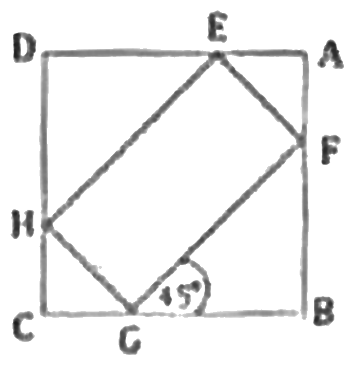

במערכת הצירים שלפניכם נתון ריבוע ABCD. נתון: b = a2.
על פי נתונים אלו ונתוני הסרטוט, מהו שטחו של הריבוע?
לכל מספר טבעי a הוגדרה הפעולה $ כך: $(a) = aa − 2
איזו מהטענות הבאות נכונה בהכרח לכל x ו־y השונים מ־2?
איזה מהביטויים הבאים אינו בהכרח חיובי, בעבור כל שני מספרים שלמים השונים מ־0?
11⁵ − 11⁴110 = ?⚠

בסרטוט שלפניכם שני מעגלים בעלי אותו המרכז. השטח האפור גדול פי 4 מהשטח הלבן.
פי כמה גדול רדיוס המעגל הגדול מרדיוס המעגל הקטן?
נתון: 12 < x · y , 4 < y < 6
מה מהבאים נכון בהכרח?
כמה מספרים המתחלקים ללא שארית ב־2, ב־3, ב־5⚠ וב־6 ישנם בין 0 ל־1000?

בסרטוט שלפניכם ריבוע ABCD בו חסום מלבן EFGH. שטחו של המשולש GBF גדול פי 94 משטחו של משולש CHG.
על פי נתונים אלו ונתוני הסרטוט, מה היחס בין שטחו של המלבן האפור וריבוע ABCD?
סייד מסייד 10 מ"ר ב־5 דקות. כמה זמן (בדקות) יידרש לסייד תיבה שמקצועותיה הם 3 ס"מ, 4 ס"מ ו־5 ס"מ⚠?
בסל יש x + 2 כדורים אדומים ו־x + 2 כדורים כחולים. x הינו מספר שלם וחיובי. מה ההסתברות להוציא 3 כדורים אדומים בזה אחר זה (ללא החזרה)?
⚠ השברים קטנים מאוד – נקראו בקירוב.